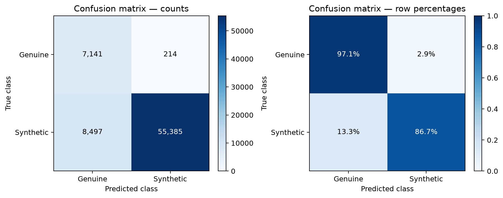
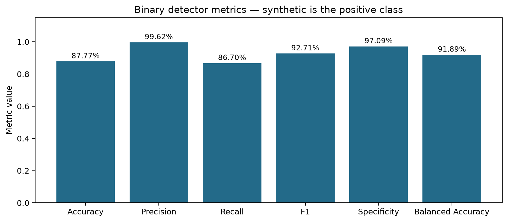
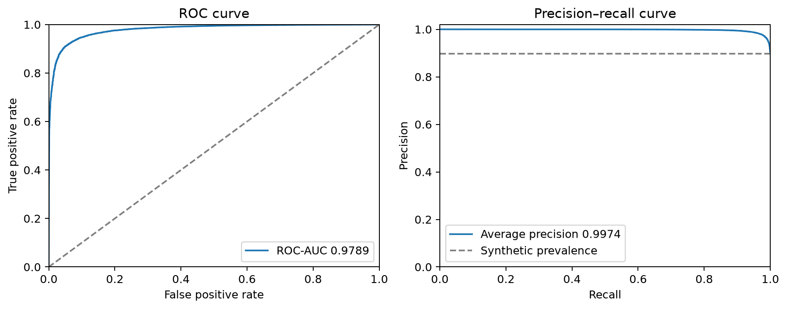
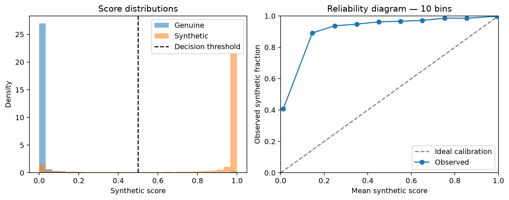
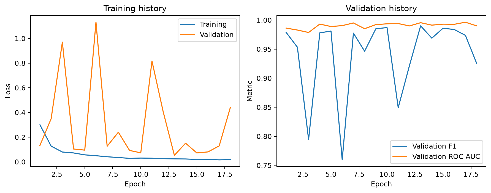

Recomputed from saved per-recording predictions; no new model inference.
Positive class: synthetic. Threshold: 0.5. Samples: 71,237.
{
"repository": "Bisher/ASVspoof_2019_LA",
"revision": "aea92dd83a9c56e070c0b1e9f02e7c0d96216a4c",
"checkpoint": "models\\english_20260907T044807696536Z\\best.pt",
"best_epoch": 13,
"notice": "English ASVspoof 2019 LA experiment using a third-party mirror. The official partitions are preserved. One centre four-second window is scored per recording. Results do not establish performance on modern Qwen3 voices, telephone calls, or other languages."
}| Metric | Value |
|---|---|
| n | 71237 |
| accuracy | 0.877718 |
| precision | 0.996151 |
| recall | 0.866989 |
| f1 | 0.927093 |
| specificity | 0.970904 |
| false_positive_rate | 0.0290959 |
| false_negative_rate | 0.133011 |
| negative_predictive_value | 0.456644 |
| balanced_accuracy | 0.918947 |
| mcc | 0.61595 |
| macro_f1 | 0.774119 |
| weighted_f1 | 0.895505 |
| synthetic_prevalence | 0.896753 |
| roc_auc | 0.978937 |
| average_precision | 0.997383 |
| brier_score | 0.0999247 |
| log_loss | 0.45885 |
| ece_10_bins | 0.122866 |




